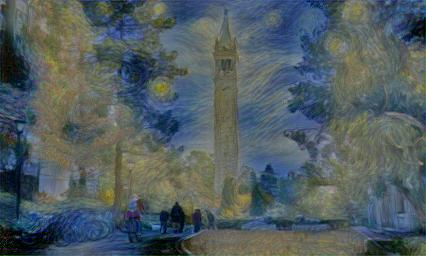

This project was super cool. I learned a lot about various algorithms for gradient descent. Basically, just reimplemented the OG style transfer paper here . Despite the hype as heck title, implementing style transfer was very minimally apptied to any theory connected to convolutional neural networks.
The crucial thing to understand why this project this works is understanding what exactly happens at each convolutional layer when a network like VGG16 is trained for the task of object recognition. When a object classification network like VGG16 is trained, each convolutional block can be thought of as a collection of learned filters, e.g. filters that, when convolved with the output of a previous layer, is optimized to produce a desirable result for the final mathematical task of classification.
Thus, at the end of training, there will be a set of learned filters for each convlutional layer that, when convolved with an input image, will produce what we call a "residual" of the image. For example, take this picture of Berkeley:
When we convolve this image with the learned filters of the first convolutional layer of VGG16, we get:
(I only showed the first 5 filters above, there are 64 of them in the first conv layer of first block)
What the authors of the paper discovered was that you can retrieve content and style information from the input image from the residual of the image at various layers in the network.
If we construct a white-noise image and pass it through the network, we can take the residual of the white noise image and an image of berkeley at, for example, layer 2 of the network, and we can compute the MSE loss between the two sets of residuals. Using gradient descent on the white noise image, we can reconstruct the content of the image. For the specific implementation/equations, please refer to the actual paper. That stuff gets a bit technical real fast. For example here is the result of running gradient descent on a white noise image by calculating residual MSE loss on layers 1 through 8 of VGG 16:
As we can see, the content is very accurately approximated with the first few layers, and we start to get some grainy results as we go deeper into the network. This is expected
To get the style of an image, we can take the MSE loss between the Gram matrix of filters at a layer. Again, refer to the paper for specific examples. But the gist of it is, we calculate the correlation of filter i to filter j at an arbitrary convolutional layer. We put these correlations into whats called an Gram matrix. We take the MSE loss between the Gram matrices of two images, the style image and a white noise image. We then gradient descent on the white noise just like above. This part was interesting because different optimizers in pytorch gave me different results. I'll discuss why later. The following images are taken from the first convolutional layer of every convolutional block in VGG16.

Adam Optimizer
LBFGS Optimizer

Wildly different results for different optimizers. Since LBFGS was much better, I just used that for further trials. Style gets more accurate as we go deeper into the network.
To transfer style from an image like Starry Night to Berkeley, we set the loss function to be a linear combination of the content loss from Berkeley and style loss from Starry Night. Again, gradient descent with an white noise image.
I reproduced many results from the paper transferring styles of abstract art with Neckarfront. Note that I set my canvas to be 256x256 for gradient descent to finish faster. Images might be a bit blurry.


This one did pretty well around the people & the Campanile. Got the trees horribly wrong haha. I conjecture it is because the abstract art has such large strokes and large patterns it is difficult to approximate finer detaills like branches and leaves.
This is the opposite, very fine style. I think this worked mostly? Maybe failed the trees because the style of Keith Haring's art is so different than the natural world.
This really was the heart of getting accurate results. Holy cow I spent a lot of time on this. Let's first talk about optimizers.
Adam was the first optimizer. Basically an improvement off of standard SGD. The theory behind Adam is pretty intensive. The gist is that it does not converge super fast. Training took a long time, and it seemed to have found a local minimum that produced "ok" results.
LBFGS was the second optimizer. Converged to a better local minima much faster, and as we seen above produced far better results. While this was experimentally better, the a conjecture for why can be found here. However, using LBFGS was not magic. According to the paper, to approximate style of a image at depth=N in the network, we would do a weighted average of the styles at all levels l <= N. However, an issue was that, numerically, the error of layer 1 was on orders of magnitude less than the error at layer 3. The reason for this is because values compound as they get convolved through the network, and thus, when I simply took an weighted average, I got some questionable results because we were essentially only descending on layers that had a high numeric error. For example:
Looks ok, but you will notice that the color is not accurate. The reason is because we "ignore" layer 1 when we descend. Thus, I had to normalize the values by multiplying a coefficient for each layer's error. This became a new hyperparameter that I had to tweak per image. I eventually settled on scaling the first layer by 1e4, and the rest of the layers by 1e1. It worked better than the other ones I tried, but my testing was not exhaustive. Running gradient descent took too long.
As for the standard hyperparameters, I had my learning rate = 1.0, epochs = 20, alpha = 1e-3, beta = 1e3. Alpha corresponds to the weight on content loss, and beta refers to weight on style loss. Here is where my results from the paper largely differ. Alpha/beta = 1e6, which is orders of magnitude larger than in the paper. However, I think its becasue I did not normalize my MSE error, which is why I need to scale down content loss by such a large number.
As I said in the beginning, the actual implementation has very little to do with convolutional networks. In theory, we can take any set of filters and reconstruct the same result. What is interesting, and a bit mysterious, is why 1. the gram matrix of filters reconstructs style, and 2. why do classification networks learn to capture content + style when being trained? Maybe there is something more intricate going on when neural networks learn? spooky spooky. Also it was arbitrary for the choice to use VGG16 as my network. (The paper told me this one produced the best results). Theoretically you could take something like alexnet and produce similar results. One thing to note is that VGG16 is deep. That may be why style is learned so well deeper into the network. Also, why does it have to be the task of classification? Could a result be produced as well with other networks that are trained to predict other things?
Anyhow, this project was super rewarding. Took me a long time to get the litty results.